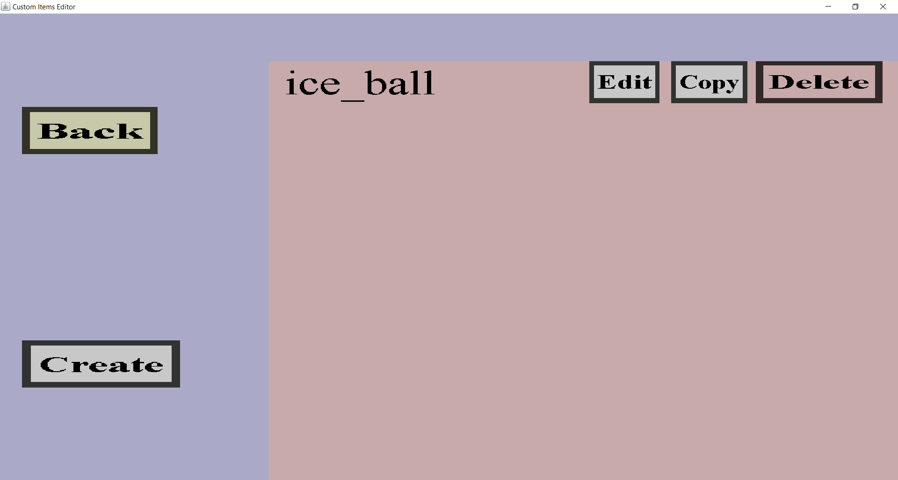

The projectile cover overview can be used to manage the projectile covers of the item set.
Projectile covers can be used to make custom projectiles visible.
If you have made a single projectile cover called 'ice_ball', it should look like this:

There should be a 'Back' button, a 'Create' button and an 'Edit', 'Copy' and 'Delete' button for each
projectile cover you made so far.
-
The 'Back' button will take you back to the projectile portal.
This will not discard any changes.
-
The 'Create' button will take you to the projectile cover creation menu
where you can create a new projectile cover.
-
The 'Edit' button will take you to the right projectile cover edit menu for the corresponding projectile.
Note that there are multiple types of projectile covers that each have their own edit menu.
-
The 'Copy' button can be used to copy projectile covers. Clicking it will take you to the projectile cover edit
menu for the corresponding projectile cover. In that menu, it will look like you are modifying that projectile cover,
but you are not! You are instead editing a copy of the projectile cover. Any changes you make will only affect the
copy, not the original projectile cover. Upon clicking the 'Create' button, you will add the copy to the list of
projectile covers.
-
Clicking the 'Delete' button will remove the corresponding projectile cover from the list of projectile covers.